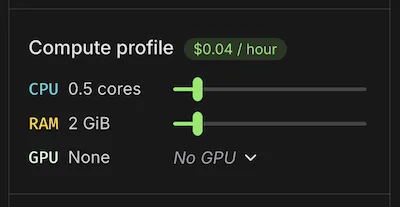

Modal Notebooks
Notebooks allow you to write and execute Python code in Modal’s cloud, within your browser. It’s a hosted Jupyter notebook with:
- Serverless pricing and automatic idle shutdown
- Access to Modal GPUs and compute
- Real-time collaborative editing
- Python Intellisense/LSP support and AI autocomplete
- Support for rich and interactive outputs like images, widgets, and plots
Getting started
Open modal.com/notebooks in your browser and create a new notebook. You can also upload an .ipynb file from your computer.
Once you create a notebook, you can start running cells. Try a simple statement like
print("Hello, Modal!")Or, import a library and create a plot:
import matplotlib.pyplot as plt
import numpy as np
x = np.linspace(-20, 20, 500)
plt.plot(np.cos(x / 3.7 + 0.3), x * np.sin(x))The default notebook image comes with a number of Python packages pre-installed, so you can get started right away. Popular ones include PyTorch, NumPy, Pandas, JAX, Transformers, and Matplotlib. You can find the full image definition here. If you need another package, just install it:
%uv pip install [my-package]All output types work out-of-the-box, including rich HTML, images, Jupyter Widgets, and interactive plots.
Kernel resources
Just like with Modal Functions, notebooks run in serverless containers. This means you pay only for the CPU cores and memory you use.
If you need more resources, you can change kernel settings in the sidebar. This lets you set the number of CPU cores, memory, and GPU type for your notebook. You can also set a timeout for idle shutdown, which defaults to 10 minutes.
Use any GPU type available in Modal, including up to 8 Nvidia A100s or H100s. You can switch the kernel configuration in seconds!

Note that the CPU and memory requests configure the minimum amount of resources allocated, but you can usually burst above the request. For example, if you’ve set the Notebook to have 0.5 CPU cores, you’ll be billed for that continuously, but you can use up to any available cores on the machine (e.g., 32 CPUs) and will be billed for only the time you use them.
Notebook pricing
Modal Notebooks are priced simply, by compute usage while the kernel is running. See the pricing page for rates. Currently the CPU and Memory costs are priced according to Sandboxes. They appear in your usage dashboard under “Notebooks”.
Inactive notebooks do not incur any cost. You are only billed for time the notebook is actively running.
Custom images, volumes, secrets, and cloud storage
Modal Notebooks supports custom images, volumes, and secrets, just like Modal Functions. You can use these to install additional packages, mount persistent storage, or access secrets.
- To use a custom image, you need to have a deployed Modal Function using that image. Then, search for that function in the sidebar.
- To use a Secret, simply create a Modal Secret using our wizard and attach it to the notebook, so it can be injected as an environment variable automatically.
- To use a Volume, create a Modal Volume and attach it to the notebook. This lets you mount high-performance, persistent storage that can be shared across multiple notebooks or functions. They will appear as folders in the
/mntdirectory by default.
Creating a Custom Image
If you don’t have a suitable deployed Modal App already, you can set up your environment to deploy custom images in under a minute using the Modal CLI. First, run pip install modal, and define your image in a file like:
import modal
# Image definition here:
image = (
modal.Image.from_registry("python:3.13-slim")
.pip_install("requests", "numpy")
.apt_install("curl", "wget")
.run_commands(
"echo 'foo' > /root/hello.txt",
# ... other commands
)
)
app = modal.App("notebook-images")
@app.function(image=image) # You need a Function object to reference the image.
def notebook_image():
passThen, make sure you have the Modal CLI (pip install modal) and run this command to build and deploy the image:
modal deploy notebook_images.pyFor more information on custom images in Modal, see our guide on defining images.
(Advanced) Note that if you use the add_local_file() or add_local_dir() functions, you’ll need to pass copy=True for them to work in Modal Notebooks. This is because they skip creating a custom image and instead mount the files into the function at startup, which won’t work in notebooks.
Creating a Secret
Secrets can be created from the dashboard at modal.com/secrets. We have templates for common credential types, and they are saved as encrypted objects until container startup.
Attached secrets become available as environment variables in your notebook.
Creating a Volume
Volumes can be created via the files panel on the filesystem tab. This panel can also be used to attach existing Volumes from your Apps or Functions, including those created via the Modal CLI.
Any volumes are attached in the /mnt folder in your notebook, and files saved there will be persisted across kernel startups and elsewhere on Modal.
Mounting Cloud Buckets
Modal Notebooks now support mounting cloud storage buckets, initially S3 buckets, directly to your notebook filesystem. This allows you to access large datasets stored in cloud storage easily on your notebooks.
To mount an S3 bucket:
- Create a Modal Secret containing your AWS credentials (AWS Access Key ID and Secret Access Key)
- In the notebook sidebar’s Files panel, use the Cloud Buckets section to attach your bucket
- Specify:
- The S3 bucket name
- Mount path (e.g.,
/mnt/s3/my-data) - The AWS credentials secret stored in that environment
- Optional: A key prefix to mount only a subset of objects (e.g.,
datasets/) - Optional: Set the mount as read-only
Once attached, your S3 bucket will be mounted at the specified path and accessible just like any other directory in your notebook.
For more information on using cloud bucket mounts with Modal, see the CloudBucket mounts guide.
Access and sharing
Need a colleague—or the whole internet—to see your work? Just click Share in the top‑right corner of the notebook editor.
Notebooks are editable by you and teammates in your workspace. To make the notebook view-only to collaborators, the creator of the notebook can change access settings in the “Share” menu. Workspace managers are also allowed to change this setting.
You can also turn on sharing by public, unlisted link. If you toggle this, it allows anyone with the link to open the notebook, even if they are not logged in. Pick Can view (default) or Can view and run based on your preference. Viewers don’t need a Modal account, so this is perfect for collaborating with stakeholders outside your workspace.
No matter how the notebook is shared, anyone with access can fork and run their own version of it.
Interactive file viewer
The panel on the left-hand side of the notebook shows a live view of the container’s filesystem:
| Feature | Details |
|---|---|
| Browse & preview | Click through folders to inspect any file that your code has created or downloaded. |
| Upload & download | Drag-and-drop files from your desktop, or click the ⬆ / ⬇ icons to add new data sets, notebooks, or models—or to save results back to your machine. |
| One-click refresh | Changes made by your code (for example, writing a CSV) appear instantly; hit the refresh icon if you want to force an update. |
| Context-aware paths | The viewer always reflects exactly what your code sees (e.g. /root, /mnt/…), so you can double-check that that file you just wrote really landed where you expected. |
Important: the underlying container is ephemeral. Anything stored outside an attached Volume disappears when the kernel shuts down (after your idle-timeout or when you hit Stop kernel). Mount a Volume for data you want to keep across sessions.
The viewer itself is only active while the kernel is running—if the notebook is stopped you’ll see an “empty” state until you start it again.
Editor features
Modal Notebooks bundle the same productivity tooling you’d expect from a modern IDE.
With Pyright, you get autocomplete, signature help, and on-hover documentation for every installed library.
We also implemented AI-powered code completion using Anthropic’s Claude Sonnet 4.6 model. This keeps you in the flow for everything from small snippets to multi-line functions. Just press Tab to accept suggestions or Esc to dismiss them.
Familiar Jupyter shortcuts (A, B, X, Y, M, etc.) all work within the notebook, so you can quickly add new cells, delete existing ones, or change cell types.
Finally, we have real-time collaborative editing, so you can work with your team in the same notebook. You can see other users’ cursors and edits in real-time, and you can see when others are running cells with you. This makes it easy to pair program or review code together.
Widgets
Modal Notebooks support Jupyter Widgets, which can be used to create interactive components living in the browser. Currently, Notebooks support all the widgets in the base ipywidgets package, except the following:
- Media Widgets (
Audio,Video), try usingIPython.displayoutputs instead. Play- Controllers (
ControllerAxis,ControllerButton,Controller)
Modal Notebooks do not support custom widget packages.
Cell magic
Modal Notebooks have built-in support for the %modal cell magic. This lets you run code in any deployed Modal Function or Cls, right from your notebook.
For example, if you have previously run modal deploy for an app like:
import modal
app = modal.App("my-app")
@app.function()
def my_function(s: str):
return len(s)Then you could access this function from your notebook:
%modal from my-app import my_function
my_function.remote("hello, world!") # returns 13Run %modal to see all options. This works for Cls as well, and you can import from different environments or alias them with the as keyword.
Roadmap
Some bigger features on mind:
- Modal cloud integrations
- Expose ports with Tunnels
- Memory snapshots to restore from past notebook sessions
- Create notebooks from the
modalCLI - Custom image registry
- Notebook editor
- Interactive outline, collapsing sections by headings
- Reactive cell execution
- Edit history
- Integrated debugger (pdb and
%debug)
- Documents and sharing
- Restore recently deleted notebooks
- Folders and tags for grouping notebooks
- Sync with Git repositories
Let us know via Slack if you have any feedback.